The Techie Gamemaster’s Tome
⚠️ 작업 중인 사이트입니다.
아직 채워 나가야 할 부분이 많으며, 지속적으로 업데이트하고 있습니다.
기본적으로 TRPG는 펜과 종이만 가지고 할 수 있는 게임입니다. 드라마 빅뱅 이론에 “상상력은 세계 최고의 그래픽카드”라는 대사가 있듯 별다른 도구 없이도 얼마든지 몰입감 있고 재미있게 즐길 수 있습니다.
그러나 게임마스터로서 마스터링을 하다 보면 여러 가지 수단을 활용해 세션을 더욱 풍성하게 꾸미고 싶은 욕심이 생깁니다. 하지만 이미 룰북과 자료 구입에 많은 돈을 소비한 상황에서 미니어쳐나 각종 RPG 용품 가격을 보면 이렇게 부푼 마음도 꺾이고 맙니다. 국내에서는 구입하기가 번거롭다는 것도 방해 요인 중 하나입니다.
이러한 상황에서 다양한 멀티미디어 환경을 구성할 수 있는 가장 저렴한 대안은 컴퓨터입니다. TRPG를 온라인으로 즐기는 ORPG의 경우 컴퓨터가 유일한 수단이기도 합니다. 다들 컴퓨터 있잖아요?
이 사이트를 통해 TRPG에 활용할 수 있는 몇 가지 디지털 툴과 사용 방법을 소개하고자 합니다. 개인적인 사용 경험을 바탕으로 작성했기 때문에 여기에 실리지 않은 다른 좋은 툴도 많이 있을 것입니다. 혹시 소개하고 싶으신 툴이 있거나 이 사이트의 정보에서 오류를 발견하셨다면 shoyuvanilla@gmail.com으로 제보해 주시면 검토하겠습니다.
가상 게임테이블
가상 게임테이블(Virtual Tabletop, VTT)은 TRPG를 즐길 수 있는 디지털 환경입니다. 주사위 굴림이나 대사 등을 입력할 수 있는 채팅 기능, 캐릭터의 정보를 저장하고 갱신할 수 있는 자동화된 캐릭터 시트 기능, 캐릭터의 위치와 현재 상황 등을 표현할 수 있는 지도 및 토큰 기능 등을 갖추고 있습니다.
주로 온라인으로 TRPG를 플레이하기 위해 사용하는 경우가 많지만 오프라인 세션에서도 실물 지도와 미니어쳐의 훌륭한 대체제 역할을 할 수 있습니다.
Roll20
가장 대중적인 가상 게임테이블 플랫폼입니다.
Foundry Virtual Tabletop
Foundry Virtual Tabletop은 셀프 호스팅 방식의 웹 기반 가상 테이블탑입니다.
2020년 5월 22일 정식 발매 예정이며 5월 1일 현재 사전 구매 형식으로 베타 버전을 사용할 수 있습니다.
라이선스 가격은 미화 50 달러입니다.
장점
- 모던 웹 기술로 만들어져 Roll20에 비해 성능이 좋고 다양한 기능을 지원합니다.
- 한번 구매하면 용량이나 기능 제한 없이 자유롭게 사용할 수 있습니다.
- API가 공개돼 있어 직접 모듈을 개발해 기능을 추가할 수 있고 다른 사람이 개발한 모듈도 쉽게 설치할 수 있습니다.
단점
- 서비스 제공자가 서버를 운영하는 타 플랫폼과 달리 직접 호스팅해야 합니다.
- 게임 룰 시스템을 공식으로 지원하는 것이 아니라 사용자들이 직접 개발합니다. 때문에 Roll20, Fantasy Grounds 등의 플랫폼처럼 메이저 룰 데이터를 직접 구매해서 사용할 수 없습니다.
- 마이너 룰 면에서도 수많은 사용자들이 각종 룰의 캐릭터 시트를 구현해 둔 Roll20에 비해 아직 지원하는 룰 시스템이 적은 편입니다. 2020년 5월 1일 기준으로 개발된 룰 시스템 목록은 아래와 같습니다.
- 제13시대 (아크메이지 엔진)
- D&D 5판 (Foundry Virtual Tabletop 개발자가 직접 개발 중인 시스템)
- 던전 월드
- 페이트 (코어, 기동형, Condensed)
- 누메네라
- 패스파인더 1판
- 패스파인더 2판 (가장 활발하게 개발 중인 시스템)
- 섀도우런 5판
- 스타파인더
- 새비지 월드 어드벤쳐 에디션
- 워해머 판타지 롤플레이 4판
이 외에도 공식으로 지원하는 언어가 영어 뿐이라는 점이 있긴 하지만 대부분의 가상 게임테이블이 영어만 지원하므로 따로 단점에 기재하지는 않았습니다. 모듈 형식으로 로컬라이징을 할 수 있으며 현재 Shoyu Vanilla에 의해 기본 프로그램의 한국어화가 완료됐고 D&D 5판 시스템의 한국어화가 진행 중입니다. (전체 시스템, 클래스 및 주문 완료, 아이템 및 클래스 요소 진행 중)
셀프 호스팅 방식이라는 것이 가장 큰 장점이자 단점으로 사용자가 원하는 방식으로 자유롭게 커스터마이즈 할 수 있고 Roll20의 느린 서버로부터 자유로울 수 있지만 컴퓨터와 친숙하지 않은 사용자는 호스팅이 생소할 수 있습니다. 이 사이트에서는 컴퓨터에 숙련 보너스를 받지 않는 게임마스터도 간단하게 호스팅 환경을 구축할 수 있도록 돕는 것을 목표로 몇 가지 가이드를 제공합니다.
기능 소개
호스팅
Foundry Virtual Tabletop은 Roll20등의 웹 서비스와 달리 직접 서버를 호스팅해야 하는 셀프 호스트 방식의 웹 어플리케이션입니다. 호스팅 방식은 크게 다음과 같은 세 가지가 있습니다.
개인 PC로 호스팅하기
데스크탑 컴퓨터, 노트북 등 개인 PC로 호스팅하는 방식입니다. 호스팅 자체는 Foundry Virtual Tabletop 어플리케이션을 실행하기만 하면 되기 때문에 매우 간단합니다. 다만 ORPG 용도로 사용하는 경우 네트워크 주소 변환(NAT) 문제로 인해 공유기에 포트 포워딩 설정을 하거나 Hamachi, ZeroTier 등의 가상 사설망 서비스를 이용해야 합니다.
장점
- 별도의 서버 유지 비용이 들지 않습니다.
- 호스팅 자체는 특별히 어려운 점이 없습니다.
단점
- ORPG를 위해 사용하는 경우 플레이어가 다른 로컬 네트워크에 있을 가능성이 높기 때문에 공유기에 포트 포워딩을 설정하거나 Hamachi, Zerotier 등의 가상 사설망 서비스를 이용해야 합니다.
- 위 문제로 인해 가상 사설망 서비스를 사용하는 경우 플레이어 입장에서는 나머지 두 방식에 비해 접속하기가 번거롭습니다.
전용 서버 개설하기
장점
- 내 전용 서버를 보유한다는 것은 뿌듯한 일입니다.
- 플레이어가 매우 쉽게 접속할 수 있습니다.
단점
- 서버 유지 비용이 조금 들어갑니다. (AWS Lightsail 기준 월 $3.5)
- 서버 개설이나 관리 경험이 없는 경우 초기 서버 구축이 조금 어려울 수 있습니다.
호스팅 위탁하기
현재 The Forge, Foundry Server 두 곳의 업체가 Foundry Virtual Tabletop과 공식 파트너십을 맺고 호스팅을 대행해 줍니다. 직접 서버를 구축할 필요 없이 월별 사용료를 지불하면서 Roll20 등의 웹 기반 타 플랫폼처럼 편리하게 사용할 수 있습니다. 하지만 Foundry Virtual Tabletop 라이선스는 직접 구매해야 합니다.
장점
- 서버 개설 및 관리와 관련된 복잡한 문제는 전문가에게 맞기고 게임에 집중할 수 있습니다.
- 플레이어가 매우 쉽게 접속할 수 있습니다.
단점
- 서버 유지 비용이 조금 들어갑니다. (플랜에 따라 월 $4~13)
- 서버가 해외에 있어 네트워크 상태가 쾌적하지 않을 수 있습니다.
개인 PC로 호스팅하기

Foundry Virtual Tabletop 공식 사이트에서 라이선스를 구매한 후 프로필 페이지의 Purchased License 항목에서 현재 PC의 운영체제에 맞는 프로그램을 다운받습니다.

다운받은 프로그램을 설치 후 실행하면 위와 같이 프로그램이 전체화면으로 열리며 이 프로그램이 열려 있는 동안 PC는 Foundry Virtual Tabletop을 호스팅하는 서버 역할을 하게 됩니다.

제대로 작동하는지 확인해 보기 위해 인터넷 브라우저로 접속해 봅시다.
인터넷 브라우저의 주소창에 127.0.0.1:30000를 입력 후 이동하면 아까 열린 프로그램처럼 Foundry Virtual Tabletop 페이지가 나타납니다.
127.0.0.1는 루프백 IP로 현재 PC에서 자기 자신을 가리키는 IP입니다.
뒤에 붙은 :30000은 Foundry Virtual Tabletop에서 사용하는 기본 포트 번호입니다.
다른 플레이어가 이 PC에서 호스팅하는 Foundry Virtual Tabletop에 접속하려면 인터넷 브라우저를 열고 주소창에 이 PC의 IP 뒤에 포트 번호를 붙인 값을 입력하면 됩니다.
예를 들어 PC의 IP가 123.45.67.89라면 인터넷 주소창에 123.45.67.89:30000을 입력해 접속할 수 있습니다.
네트워크 주소 변환(NAT) 문제
그러나 네이버 등의 포털 사이트에서 “내 IP” 를 검색해 확인한 IP를 다른 플레이어에게 알려 줄 경우 대부분 접속이 되지 않을 것입니다.
혹은 Windows의 네트워크 관리자에서 확인한 IP나 명령 프롬프트(CMD)에 ipconfig를 입력해 확인한 IP를 알려 주는 경우도 대부분 접속이 되지 않을 것입니다.
이는 네트워크 주소 변환(Network Address Translation) 때문입니다.
오늘날 대부분의 개인 인터넷 환경은 PC가 인터넷과 바로 연결돼 있는 것이 아니라 중간에 인터넷 공유기 등의 라우터를 한번 거치게 되어 있습니다. 인터넷에 직접 연결된 라우터에는 공인 IP가 할당되어 있으며 라우터는 다시 내부 사설망에 연결된 기기에 사설 IP를 할당하는데 이를 네트워크 주소 변환이라고 합니다.

위 그림에서 인터넷 공유기에는 공인 IP 123.45.67.89가 할당되어 있습니다.
포털 사이트에서 “내 IP”를 검색할 때 나오는 IP는 이 공인 IP입니다.
그러나 이 공인 IP에 접속 요청을 하면 공유기는 해당 요청을 내부 사설망의 어느 기기로 전달해야 할지 알 수 없기 때문에 접속 요청은 공유기에서 끝나고 맙니다.
반면 Windows의 네트워크 관리자나 명령 프롬프트로 확인할 수 있는 IP는 내부 사설망에서 PC에 할당된 사설 IP인 192.168.1.2입니다.
이 IP는 현재 공유기의 내부 사설망 안에서만 통용되기 때문에 그림에서 192.168.1.1이 할당된 기기나 192.168.1.3이 할당된 기기에서는 해당 IP로 접속할 수 있지만 사설망 바깥에 있는 기기에서는 해당 IP로 접속할 수 없습니다. 호스팅이 필요한 이유는 보통 멀리 떨어진 사람과 ORPG를 하기 위함이다 보니 접속할 수 없는 경우가 대부분일 것입니다.
조악하나마 비유하자면 집에 손님을 초대하는 상황에서 공인 IP는 아파트 동 번호이고 사설 IP는 아파트 호수라고 할 수 있습니다. 공인 IP를 알려주면 그 아파트 동에 있는 여러 가구 중 몇 호인지 알 수 없어서 손님이 찾아올 수 없습니다. 반대로 사설 IP를 알려주면 같은 동에 사는 손님은 찾아올 수 있겠지만 밖에서 찾아오는 손님은 동 번호를 모르니 찾아올 방법이 없습니다. 동호수를 모두 알려주고 그대로 찾아오라고 하면 좋겠지만 안타깝게도 인터넷 주소체계에서는 불가능한 방식입니다.
공유기 포트 포워딩 설정이나 가상 사설망 등으로 이 문제를 해결해야 합니다.
라우터 포트 포워딩
포트 포워딩(Port Forwarding)은 컴퓨터 네트워크에서 특정 요청을 다른 곳으로 넘겨 주는 것을 말합니다.
위의 예시에서 공유기에 80번 포트로 들어오는 요청을 192.168.1.2 기기의 30000번 포트로 전달하도록 설정한다면 외부 플레이어는 123.45.67.89:80으로 Foundry Virtual Tabletop을 호스팅하는 PC에 접속할 수 있을 것입니다.
사용하는 라우터나 인터넷 공유기에 따라(iptime, skt, kt등) 설정 방식이 조금씩 달라서 여기서 자세한 방법을 다루지는 않겠습니다. 인터넷에 “OOO 공유기 포트 포워딩” 등을 검색하면 구체적인 방법을 잘 설명한 글이 많습니다.
가상 사설망 이용
가상 사설망(VPN)이란 인터넷 여러 곳에 퍼져 있는 기기들을 연결하는 가상의 사설 네트워크를 말합니다.
위의 예시에서는 같은 내부 사설망에 속한 192.168.1.1 기기와 192.168.1.3 기기가 192.168.1.2 기기에 사설 IP로 접속할 수 있었습니다.
이와 유사하게 Foundry Virtual Tabletop을 호스팅하는 PC와 여기에 접속하는 다른 PC가 연결된 가상 사설망을 구축하면 가상 사설망에서 호스트 PC에 부여된 사설 IP로 다른 PC가 접속할 수 있습니다.
가상 사설망을 구축할 수 있는 대표적인 서비스로는 Hamachi와 ZeroTier가 있습니다. 가상 사설망을 이용하는 경우 호스트는 물론이고 접속하려는 플레이어도 자신의 PC에 해당 서비스를 설치해야 합니다.
Hamachi
Hamachi는 이 분야에서 가장 대중적인 서비스입니다. 사용법도 간단하고 기본 기능은 무료입니다. 그러나 무료 플랜으로는 한 사설망에 접속할 수 있는 기기의 숫자가 최대 5대로 제한됩니다. 전체 인원이 6명 이상인 경우 유료 플랜을 구독하거나 호스트가 사설망을 여러 개 구축해 인원을 나누어 수용하는 편법을 사용할 수 있습니다.
사용법 작성 예정
ZeroTier
ZeroTier는 오픈소스 프로젝트이며 무료입니다. 속도도 빠르고 강력한 기능이 많지만 하마치에 비해서는 사용법이 약간 복잡합니다.
사용법 작성 예정
파일 관리 및 백업
내용 작성 예정
전용 서버 개설하기
⚠️ 리눅스 서버나 웹 호스팅에 익숙하지 않은 분들을 대상으로 작성했습니다.
ssh 클라이언트 등 별도 프로그램 설치나 리눅스 터미널 명령은 생소할 것이라 생각해 가능한 줄였습니다. 좀 더 일반적인 가이드는 Foundry Virtual Tabletop 커뮤니티 위키를 참고하시기 바랍니다.
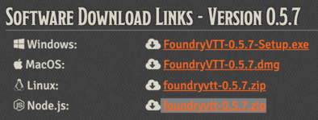
먼저 Foundry Virtual Tabletop 공식 사이트에서 라이선스를 구매한 후 위와 같이 Node.js 버전을 다운로드합니다.
클라우드 컴퓨팅 서비스 선택
클라우드 컴퓨팅 서비스를 이용해 서버를 개설할 것입니다. 다양한 서비스가 있으나 이 가이드에서는 월 요금이 $3.5로 저렴하며 서울에 서버가 있는 AWS Lightsail을 예시로 다뤘습니다. 다른 서비스를 사용하는 경우에도 방식은 크게 다르진 않습니다.
먼저 AWS에 가입 후 콘솔에 로그인합니다.

서비스 목록에서 Lightsail을 선택합니다.
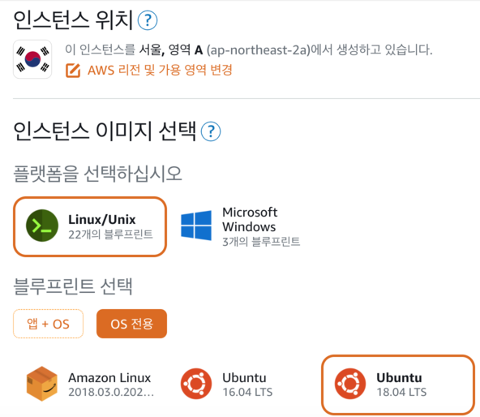
인스턴스 생성을 클릭하고 위치와 블루프린트를 확인합니다.
위치가 서울 외의 다른 지역으로 설정된 경우 (해외에 거주하시는 분은 가까운 지역으로 설정하시면 됩니다.) AWS 리전 및 가용 영역 변경을 클릭해 서울로 변경합니다.
블루프린트는 OS 전용에서 Ubuntu 18.04 LTS를 선택합니다.
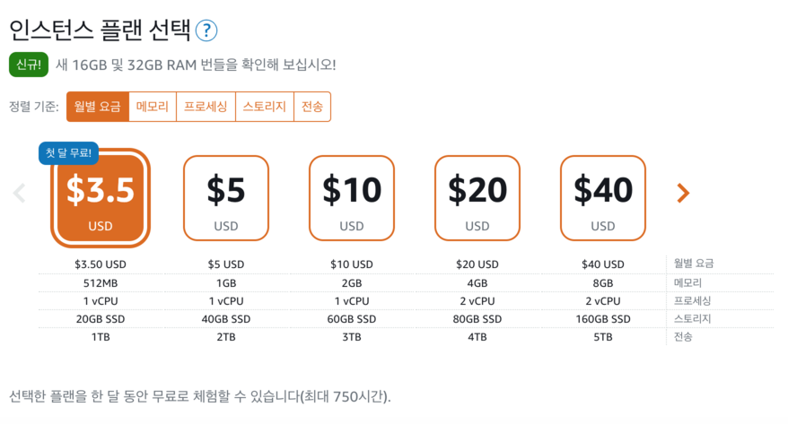
인스턴스 플랜은 가장 저렴한 월 $3.5 플랜으로도 충분합니다.

원하는 명칭을 Lightsail 리소스 이름으로 지정한 후 인스턴스 생성 버튼을 클릭합니다.
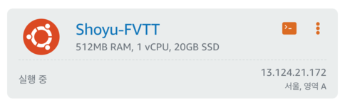
잠시 후 생성된 인스턴스가 실행 중으로 표시되면 이제 이 인스턴스를 Foundry Virtual Tabletop 서버로 만들 차례입니다.
초기 설정
위의 인스턴스 칸에 있는 모양의 주황색 터미널 아이콘을 클릭하면 새 창에서 터미널이 열립니다.
다른 클라우드 컴퓨팅 서비스를 이용하는 경우에도 터미널을 연 후의 과정은 동일합니다.

위 이미지와 같이 터미널이 열리면 다음 명령어를 복사해서 붙여넣은 후 엔터 키를 누릅니다. 이는 서버 구축을 위해 필요한 프로그램 설치 및 설정을 자동화한 코드입니다.
bash <(curl -s https://raw.githubusercontent.com/ShoyuVanilla/FoundryVTT-docker-compose/master/install.sh)
입력하면 메시지가 여러 줄 뜨면서 각종 설치가 진행될 것입니다.

잠시 후 위와 같이 설치 과정에서 서비스 몇 가지를 자동으로 재시작할지를 묻는 메시지가 뜨면 왼쪽 방향키를 눌러 <Yes>를 선택한 후 엔터 키를 누릅니다.
설치가 완료되면 터미널에 다음 명령어를 입력한 후 엔터 키를 누릅니다.
foundry up
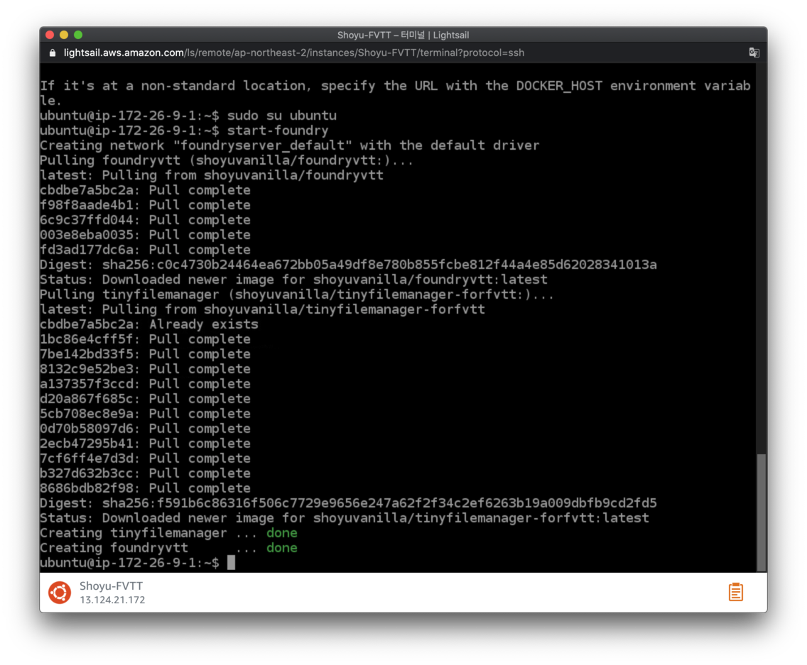
정상적으로 진행된다면 위와 같이
Creating tinyfilemanager ... done
Creating foundryvtt ... done
이라는 메시지가 표시될 것입니다.
혹시 에러가 발생할 경우 터미널에 sudo su ${USER}를 입력한 후 엔터 키를 누르거나 터미널 창을 닫았다가 다시 연 후 재시도합니다.
파일 매니저 설정
foundry up 명령어로 현재 서버에서는 Docker라는 플랫폼에서 파일 매니저와 Foundry Virtual Tabletop이 실행 중입니다.
그러나 이 가이드의 첫 부분에서 다운로드한 Foundry Virtual Tabletop을 아직 서버에 설치하지 않았기 때문에 현재 서버에서 돌아가는 Foundry Virtual Tabletop은 껍데기만 있는 상태입니다. 파일 매니저를 이용해 Foundry Virtual Tabletop를 서버에 설치할 것입니다.
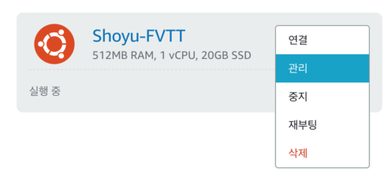
다시 Lightsail 콘솔로 돌아가 인스턴스 칸의 햄버거 메뉴(콘솔 아이콘 옆의 점 3개)를 열어 관리 페이지로 들어갑니다.

관리 페이지의 네트워킹 탭에서 방화벽의 규칙 추가를 클릭해 위와 같이 8080번 포트를 여는 규칙을 생성합니다. 서버 자동 설정 코드에서 파일 매니저를 8080번 포트에서 실행하도록 설정했기 때문에 파일 매니저에 접속하려면 8080번 포트가 열려 있어야 하기 때문입니다.
IP 주소 항목의 퍼블릭 IP가 현재 서버의 IP 주소입니다. 이 주소와 포트 번호를 통해 파일 매니저에 접속할 것입니다.
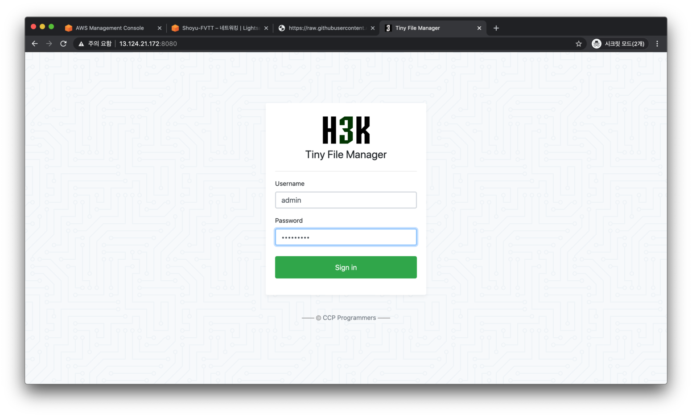
인터넷 브라우저의 새 탭을 열어 주소 창에 <서버 IP>:8080을 입력한 후 이동합니다.
예시) 13.124.21.172:8080
위와 같이 파일 매니저 로그인 페이지가 열릴 것입니다.
사용자명 및 비밀번호의 기본 정보는 다음과 같습니다.
Username: admin
Password: admin@123
이 기본 정보로 로그인합니다.
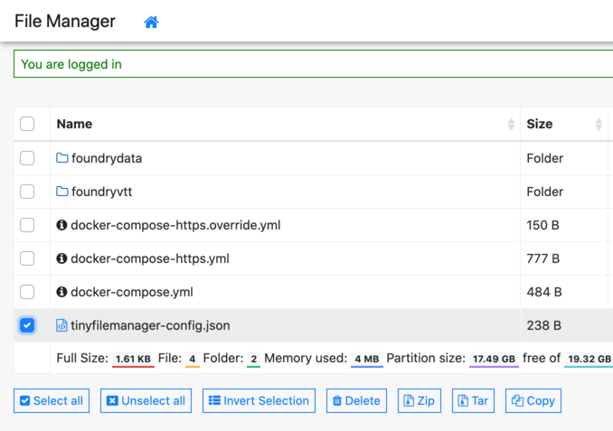
위와 같이 현재 파일 목록이 나올 것입니다.
가장 아래에 있는 tinyfilemanager-config.json 파일을 열어 사용자명 및 비밀번호를 변경할 것입니다.

파일 이름을 클릭하면 상세 정보가 나타납니다. Edit 버튼을 클릭해 편집 모드로 들어갑니다.

기본적으로 "admin", "user" 두 개의 계정이 설정되어 있습니다.
"admin" 계정은 Foundry Virtual Tabletop 폴더 내의 모든 항목에 접근할 수 있는 관리자 계정입니다.
"user" 계정은 "userdir"에 지정된 값에 의해 데이터 폴더에만 접근할 수 있도록 제한해 둔 계정인데 다른 사람에게 서버를 빌려 줄 경우를 상정해 만들었습니다.
"username"과 "password" 항목을 담고 있는 중괄호 블록을 삭제해 계정을 지울 수 있고, 복사해서 붙여넣는 방식으로 새 계정을 추가할 수도 있습니다.
단, 중괄호로 묶인 부분은 쉼표(,)로 구분되어야 합니다.
위에서 강조 표시한 "username"과 "password" 항목을 수정할 것입니다.
전체 형식을 유지하면서 큰따옴표 안의 admin, admin@123, user, 12345 등을 원하는 값으로 지정해 계정 이름과 비밀번호를 변경합니다.
이 파일 매니저는 설치가 끝난 후에도 서버에 새 파일을 업로드하거나 백업을 위해 계속 사용할 것입니다. 초기 계정 이름 및 비밀번호를 그대로 두면 타인이 접속할 우려가 있으니 꼭 변경해 줍시다.
변경이 끝나면 Save 버튼을 클릭해 저장합니다.
Foundry Virtual Tabletop 설치

파일 매니저 초기 페이지에서 foundryvtt 폴더 이름을 클릭해 폴더로 이동합니다.
우측 상단의 Upload 버튼을 클릭하면 드래그 앤 드롭을 통해 파일을 업로드할 수 있는 페이지가 열립니다.
이 가이드의 첫 부분에서 다운로드한 Foundry Virtual Tabletop 압축 파일을 끌어다 놓습니다.

업로드가 완료되면 다시 foundryvtt 폴더로 돌아가 업로드한 파일을 클릭합니다.

UnZip을 클릭하면 압축이 해제됩니다. Foundry Virtual Tabletop이 설치되었으니 이제 빈 껍데기뿐이었던 기존 컨테이너를 다시 시작할 차례입니다.
다시 터미널 창을 연 후
foundry up
를 통해 컨테이너를 중지한 후
foundry down
를 통해 컨테이너를 다시 실행합니다.

인터넷 브라우저의 주소 창에 서버의 퍼블릭 IP를 입력한 후 위와 같이 라이선스 키 입력을 요구하는 페이지가 나오면 서버 구축이 완료된 것입니다.
서버가 재부팅될 경우에도 Foundry Virtual Tabletop과 파일 매니저를 자동으로 실행하게 설정해 두었으니 터미널을 열지 않고 인터넷 브라우저만으로도 편리하게 사용할 수 있습니다.
세션에 참여할 플레이어에게 이 서버의 퍼블릭 IP를 알려주면 인터넷 브라우저를 통해 서버에 접속할 수 있습니다. 보안을 위해 Foundry Virtual Tabletop Setup 페이지의 Configuration 항목에서 Administrator Password를 설정하실 것을 권장합니다.
파일 업로드 및 백업
파일 관리자에 접속합니다.

Foundry Virtual Tabletop 데이터가 저장되는 폴더는 foundryvttdata 입니다.
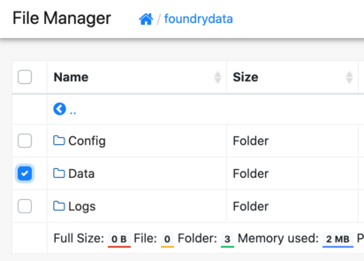
foundryvttdata 폴더 아래에는 Config, Data, Logs 폴더가 있습니다.
Config 폴더는 라이선스 및 Foundry Virtual Tabletop 기본 설정이 저장되는 폴더이며, Logs 폴더는 서버 구동 중에 발생한 로그(인게임 채팅 로그와는 무관)나 에러 등이 저장되는 공간입니다.
업로드 및 백업을 위해 신경써야 할 하는 폴더는 Data 폴더입니다.
Foundry Virtual Tabletop에서 이미지나 음원 등을 불러올 때 내부 파일 탐색기로 접근할 수 있는 파일은 이 Data 폴더 아래에 있는 파일 및 폴더에 한정됩니다.
따라서 게임에 쓰기 위한 멀티미디어 파일을 업로드할 때에는 Data 폴더나 그 하위 폴더를 이용해야 합니다.

Data 폴더 아래에는 modules, systems, worlds 폴더가 있습니다.
modules 폴더에는 Foundry Virtual Tabletop에 설치한 모듈이 저장되며 systems 폴더에는 D&D, 던전월드 등의 게임 시스템이 저장됩니다.
플레이어 및 캐릭터, 지도, 채팅 기록 등은 worlds 폴더 아래에 저장됩니다.
그러나 캐릭터의 초상화나 토큰 이미지 등이 worlds 폴더 외부에 있을 수 있으니 가급적이면 Data 폴더를 통째로 백업하는 것이 좋습니다.

위와 같이 Data 폴더를 통째로 압축해서

PC로 다운로드할 수 있습니다. 서버를 옮기거나 서버에서 플레이하던 캠페인을 PC로 옮기는 경우 이 파일의 압축을 해제해 Foundry Virtual Tabletop의 Data 폴더에 덮어씌우면 데이터를 유지할 수 있습니다.
서버 도메인 및 HTTPS 보안 설정 (선택사항)
서버의 퍼블릭 IP는 기억하기 어렵기도 하고 전용 주소가 있는 것이 그럴듯하기 때문에 서버에 도메인을 설정하는 경우가 많습니다. 도메인 구입 및 할당 방식은 인터넷에 잘 나와있으므로 여기서 다루지는 않을 것입니다.
다만 서버에 도메인을 할당할 경우 이왕이면 SSL 인증을 통해 HTTPS 보안 설정까지 하는 것이 좋을 것입니다. 손쉽게 SSL 인증을 하는 법을 소개합니다.
먼저 Foundry Virtual Tabletop과 파일 매니저에 할당할 두 개의 서브도메인을 생성한 후 둘 모두 서버의 퍼블릭 IP로 연결합니다.

파일 매니저에 접속해 docker-compose-https.override.yml 파일을 편집합니다.
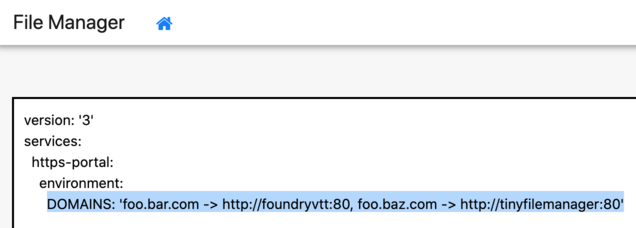
DOMAINS 부분의 foo.bar.com과 foo.baz.com 부분을 각각 Foundry Virtual Tabletop과 파일 매니저의 서브도메인으로 변경한 후 저장합니다.
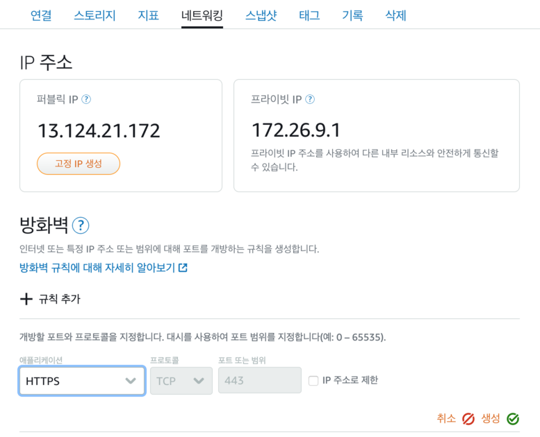
다시 Lightsail 인스턴스 관리 페이지의 네트워킹 탭에서 규칙 추가를 클릭합니다. 애플리케이션 드롭다운 메뉴에서 HTTPS를 선택해 HTTPS 접속에 쓰이는 443번 포트를 개방하는 규칙을 생성합니다. 기존에 열어 두었던 8080번 포트는 이제 사용하지 않으니 규칙에서 삭제합니다.
터미널 창을 열고
foundry down
를 통해 실행 중인 컨테이너를 중지한 후
foundry-https up
를 통해 HTTPS 설정으로 다시 실행하면 SSL 설정이 완료됩니다.
중지 명령어는 foundry-https down입니다.
⚠️ SSL 설정 후 접속이 되지 않을 경우, 이는 DNS 정보가 Let’s Encrypt의 DNS 서버까지 퍼지지 않아서일 수 있습니다. 새로 서브도메인을 생성하거나 변경한 후 얼마 지나지 않은 경우 이러한 일이 발생합니다. 몇 시간 ~ 최대 이틀 뒤에 다시
foundry-https up명령어로 재시도하십시오.
호스팅 위탁하기
내용 작성 예정
TaleSpire
Unity3D로 개발 중인 PC 어플리케이션 방식의 가상 게임테이블입니다. 2020년 5월 1일 기준으로 Kickstarter 후원자들을 대상으로 베타 테스트가 진행 중입니다.
이미지
지도
지도 제작
지도를 제작할 수 있는 툴 목록입니다.
Wonderdraft
Dungeondraft
Dungeon Painter Studio
Grid Cartographer
무료 지도
토큰
무료 토큰
무료 토큰 이미지를 제공하는 사이트 목록입니다.
2-Minute Tabletop
Forgotten Adventures
토큰 제작
직접 토큰 이미지를 제작할 수 있는 사이트 목록입니다.
TokenStamp 2
2-Minute Token Editor
초상화
기타
PrintableHeroes
사운드
배경 음악, 앰비언트 사운드, 효과음 등의 음향 효과는 분위기를 조성하고 몰입감을 높이기에 매우 효과적입니다.
대부분의 가상 게임테이블은 음향 효과 기능을 내장하고 있지만 저장 용량의 제약이나 불편한 인터페이스, 부족한 기능 등의 문제로 별도의 사운드보드를 찾기도 합니다. 반면 오프라인 TRPG에서는 가상 게임테이블이나 사운드보드 대신 스피커와 음원만으로도 충분한 경우도 많습니다.
음원
사운드보드
사운드보드는 수록된 음원을 재생할 수 있는 컴퓨터 프로그램이나 웹 어플리케이션, 장치 등을 가리키는 말입니다. 사운드보드에 내장된 다양한 음원을 활용하면 필요한 음원을 일일이 찾는 수고를 덜 수 있습니다.
오프라인 세션의 경우 출력이 충분한 스피커 말고는 크게 신경을 쓸 것이 없지만 온라인 세션에서는 모든 참가자들이 같은 음원의 같은 부분을 동시에 들을 수 있도록 할 수단이 필요합니다. 일부 사운드보드는 여러 사람과 동시에 연결해 싱크를 유지하는 기능을 지원하지만 그렇지 않은 경우 오디오 출력을 마이크 입력으로 변환할 수단이 필요합니다.
Tabletop Audio
Syrinscape
Phanary
myNoise
기타
Shoyu Vanilla
B Game developer.